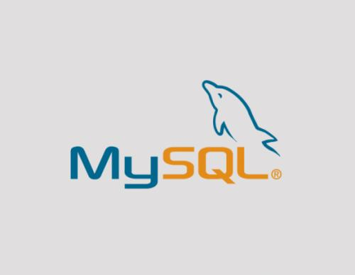

4. MySQL [MySQL] [1] [2]¶
| [MySQL] | https://www.mysql.com/ |
| [1] | https://www.mysql.com/ |
| [2] | https://en.wikipedia.org/wiki/MySQL |
Note
Official Announcement
MySQL是全球最受欢迎的开源数据库。凭借其经过验证的性能，可靠性和易用性，MySQL已经成为基于Web的应用程序的领先数据库选择，并被包括Facebook，Twitter，YouTube，Yahoo! 还有很多。
Oracle推动MySQL的创新，为下一代网络，云，移动和嵌入式应用提供新功能。
Note
csdn discussion
- 体积小、速度快、总体拥有成本低，开源；
- 支持多种操作系统；
- 是开源数据库，提供的接口支持多种语言连接操作
- MySql的核心程序采用完全的多线程编程。线程是轻量级的进程，它可以灵活地为用户提供服务，而不过多的系统资源。用多线程和C语言实现的MySql能很容易充分利用CPU；
- MySql有一个非常灵活而且安全的权限和口令系统。当客户与MySql服务器连接时，他们之间所有的口令传送被加密，而且MySql支持主机认证；
- 支持ODBC for Windows， 支持所有的ODBC 2.5函数和其他许多函数， - 可以用Access连接MySql服务器， 使得应用被扩展；
- 支持大型的数据库， 可以方便地支持上千万条记录的数据库。作为一个开放源代码的数据库，可以针对不同的应用进行相应的修改。
- 拥有一个非常快速而且稳定的基于线程的内存分配系统，可以持续使用面不必担心其稳定性；
- MySQL同时提供高度多样性，能够提供很多不同的使用者介面，包括命令行客户端操作，网页浏览器，以及各式各样的程序语言介面，例如C+，Perl，Java，PHP，以及Python。你可以使用事先包装好的客户端，或者干脆自己写一个合适的应用程序。MySQL可用于Unix，Windows，以及OS/2等平台，因此它可以用在个人电脑或者是服务器上；
Note
wikipedia
MySQL的是一种开源 关系数据库管理系统（RDBMS）。MySQL开发项目已经根据GNU通用公共许可证的条款提供了其源代码，以及各种专有协议。MySQL由一家单一的盈利公司拥有和赞助，瑞典公司MySQL AB现由Oracle公司拥有.对于专有使用，可以使用多种付费版本，并提供附加功能。
MySQL是LAMP开源Web应用程序软件堆栈（和其他“ AMP ”堆栈）的核心组件。LAMP是“ Linux，Apache，MySQL，Perl / PHP / Python ” 的首字母缩写。使用MySQL数据库的应用程序包括：TYPO3，MODx，Joomla，WordPress，简单机器论坛，phpBB，MyBB和Drupal。MySQL也被用于许多高规格的大型网站，包括Google（虽然不是用于搜索），Facebook,Twitter,Flickr和YouTube。